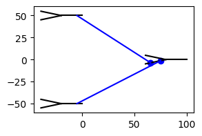
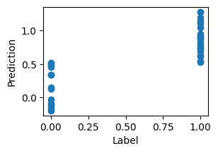

Training biophysical models¶
In this tutorial, you will learn how to train biophysical models in Jaxley. This includes the following:
- compute the gradient with respect to parameters
- use parameter transformations
- use multi-level checkpointing
- define optimizers
- write dataloaders and parallelize across data
Here is a code snippet which you will learn to understand in this tutorial:
from jax import jit, vmap, value_and_grad
import jaxley as jx
import jaxley.optimize.transforms as jt
net = ... # See tutorial on the basics of `Jaxley`.
# Define which parameters to train.
net.cell("all").make_trainable("HH_gNa")
net.IonotropicSynapse.make_trainable("IonotropicSynapse_gS")
parameters = net.get_parameters()
# Define parameter transform and apply it to the parameters.
transform = jx.ParamTransform([
{"IonotropicSynapse_gS": jt.SigmoidTransform(0.0, 1.0)},
{"HH_gNa":jt.SigmoidTransform(0.0, 1, 0)}
])
opt_params = transform.inverse(parameters)
# Define simulation and batch it across stimuli.
def simulate(params, datapoint):
current = jx.datapoint_to_step_currents(i_delay=1.0, i_dur=1.0, i_amps=datapoint, dt=0.025, t_max=5.0)
data_stimuli = net.cell(0).branch(0).comp(0).data_stimulate(current, None)
return jx.integrate(net, params=params, data_stimuli=data_stimuli, checkpoint_inds=[20, 20], delta_t=0.025)
batch_simulate = vmap(simulate, in_axes=(None, 0))
# Define loss function and its gradient.
def loss_fn(opt_params, datapoints, label):
params = transform.forward(opt_params)
voltages = batch_simulate(params, datapoints)
return jnp.abs(jnp.mean(voltages) - label)
grad_fn = jit(value_and_grad(loss_fn, argnums=0))
# Define data and dataloader.
data = jnp.asarray(np.random.randn(100, 3))
dataloader = Dataset.from_tensor_slices((inputs, labels))
dataloader = dataloader.shuffle(dataloader.cardinality()).batch(4)
# Define the optimizer.
optimizer = optax.Adam(lr=0.01)
opt_state = optimizer.init_state(opt_params)
for epoch in range(10):
for batch in dataloader:
stimuli = batch[0].numpy()
labels = batch[1].numpy()
loss, gradient = grad_fn(opt_params, stimuli, labels)
# Optimizer step.
updates, opt_state = optimizer.update(gradient, opt_state)
opt_params = optax.apply_updates(opt_params, updates)
from jax import config
config.update("jax_enable_x64", True)
config.update("jax_platform_name", "cpu")
import matplotlib.pyplot as plt
import numpy as np
import jax
import jax.numpy as jnp
from jax import jit, vmap, value_and_grad
import jaxley as jx
from jaxley.channels import Leak
from jaxley.synapses import TanhRateSynapse
from jaxley.connect import fully_connect
First, we define a network as you saw in the previous tutorial:
_ = np.random.seed(0) # For synaptic locations.
comp = jx.Compartment()
branch = jx.Branch(comp, ncomp=2)
cell = jx.Cell(branch, parents=[-1, 0, 0])
net = jx.Network([cell for _ in range(3)])
pre = net.cell([0, 1])
post = net.cell([2])
fully_connect(pre, post, TanhRateSynapse())
# Change some default values of the tanh synapse.
net.TanhRateSynapse.set("TanhRateSynapse_x_offset", -60.0)
net.TanhRateSynapse.set("TanhRateSynapse_gS", 1e-3)
net.TanhRateSynapse.set("TanhRateSynapse_slope", 0.1)
net.insert(Leak())
This network consists of three neurons arranged in two layers:
net.compute_xyz()
net.rotate(180)
net.arrange_in_layers(layers=[2, 1], within_layer_offset=100.0, between_layer_offset=100.0)
fig, ax = plt.subplots(1, 1, figsize=(3, 2))
_ = net.vis(ax=ax, detail="full")

We consider the last neuron as the output neuron and record the voltage from there:
net.delete_recordings()
net.cell(0).branch(0).loc(0.0).record()
net.cell(1).branch(0).loc(0.0).record()
net.cell(2).branch(0).loc(0.0).record()
Added 1 recordings. See `.recordings` for details.
Added 1 recordings. See `.recordings` for details.
Added 1 recordings. See `.recordings` for details.
Defining a dataset¶
We will train this biophysical network on a classification task. The inputs will be values and the label is binary:
inputs = jnp.asarray(np.random.rand(100, 2))
labels = jnp.asarray((inputs[:, 0] + inputs[:, 1]) > 1.0)
fig, ax = plt.subplots(1, 1, figsize=(3, 2))
_ = ax.scatter(inputs[labels, 0], inputs[labels, 1])
_ = ax.scatter(inputs[~labels, 0], inputs[~labels, 1])

labels = labels.astype(float)
Defining trainable parameters¶
net.delete_trainables()
This follows the same API as .set() seen in the previous tutorial. If you want to use a single parameter for all radiuses in the entire network, do:
net.make_trainable("radius")
Number of newly added trainable parameters: 1. Total number of trainable parameters: 1
We can also define parameters for individual compartments. To do this, use the "all" key. The following defines a separate parameter the sodium conductance for every compartment in the entire network:
net.cell("all").branch("all").loc("all").make_trainable("Leak_gLeak")
Number of newly added trainable parameters: 18. Total number of trainable parameters: 19
Making synaptic parameters trainable¶
Synaptic parameters can be made trainable in the exact same way. To use a single parameter for all syanptic conductances in the entire network, do
net.TanhRateSynapse.make_trainable("TanhRateSynapse_gS")
Here, we use a different syanptic conductance for all syanpses. This can be done as follows:
net.TanhRateSynapse.edge("all").make_trainable("TanhRateSynapse_gS")
Number of newly added trainable parameters: 2. Total number of trainable parameters: 21
Running the simulation¶
Once all parameters are defined, you have to use .get_parameters() to obtain all trainable parameters. This is also the time to check how many trainable parameters your network has:
params = net.get_parameters()
You can now run the simulation with the trainable parameters by passing them to the jx.integrate function.
s = jx.integrate(net, params=params, t_max=10.0)
Stimulating the network¶
The network above does not yet get any stimuli. We will use the 2D inputs from the dataset to stimulate the two input neurons. The amplitude of the step current corresponds to the input value. Below is the simulator that defines this:
def simulate(params, inputs):
currents = jx.datapoint_to_step_currents(i_delay=1.0, i_dur=1.0, i_amp=inputs / 10, delta_t=0.025, t_max=10.0)
data_stimuli = None
data_stimuli = net.cell(0).branch(2).loc(1.0).data_stimulate(currents[0], data_stimuli=data_stimuli)
data_stimuli = net.cell(1).branch(2).loc(1.0).data_stimulate(currents[1], data_stimuli=data_stimuli)
return jx.integrate(net, params=params, data_stimuli=data_stimuli, delta_t=0.025)
batched_simulate = vmap(simulate, in_axes=(None, 0))
We can also inspect some traces:
traces = batched_simulate(params, inputs[:4])
fig, ax = plt.subplots(1, 1, figsize=(4, 2))
_ = ax.plot(traces[:, 2, :].T)

Defining a loss function¶
Let us define a loss function to be optimized:
def loss(params, inputs, labels):
traces = batched_simulate(params, inputs) # Shape `(batchsize, num_recordings, timepoints)`.
prediction = jnp.mean(traces[:, 2], axis=1) # Use the average over time of the output neuron (2) as prediction.
prediction = (prediction + 72.0) / 5 # Such that the prediction is roughly in [0, 1].
losses = jnp.abs(prediction - labels) # Mean absolute error loss.
return jnp.mean(losses) # Average across the batch.
And we can use JAX’s inbuilt functions to take the gradient through the entire ODE:
jitted_grad = jit(value_and_grad(loss, argnums=0))
value, gradient = jitted_grad(params, inputs[:4], labels[:4])
Defining parameter transformations¶
Before training, however, we will enforce for all parameters to be within a prespecified range (such that, e.g., conductances can not become negative)
import jaxley.optimize.transforms as jt
# Define a function to create appropriate transforms for each parameter
def create_transform(name):
if name == "axial_resistivity":
# Must be positive; apply Softplus and scale to match initialization
return jt.ChainTransform([jt.SoftplusTransform(0), jt.AffineTransform(5000, 0)])
elif name == "length":
# Apply Softplus and affine transform for the 'length' parameter
return jt.ChainTransform([jt.SoftplusTransform(0), jt.AffineTransform(10, 0)])
else:
# Default to a Softplus transform for other parameters
return jt.SoftplusTransform(0)
# Apply the transforms to the parameters
transforms = [{k: create_transform(k) for k in param} for param in params]
tf = jt.ParamTransform(transforms)
transform = jx.ParamTransform([{"radius": jt.SigmoidTransform(0.1, 5.0)},
{"Leak_gLeak":jt.SigmoidTransform(1e-5, 1e-3)},
{"TanhRateSynapse_gS" : jt.SigmoidTransform(1e-5, 1e-2)}])
With these modify the loss function acocrdingly:
def loss(opt_params, inputs, labels):
transform.forward(opt_params)
traces = batched_simulate(params, inputs) # Shape `(batchsize, num_recordings, timepoints)`.
prediction = jnp.mean(traces[:, 2], axis=1) # Use the average over time of the output neuron (2) as prediction.
prediction = (prediction + 72.0) # Such that the prediction is around 0.
losses = jnp.abs(prediction - labels) # Mean absolute error loss.
return jnp.mean(losses) # Average across the batch.
Using checkpointing¶
Checkpointing allows to vastly reduce the memory requirements of training biophysical models (see also JAX’s full tutorial on checkpointing).
t_max = 5.0
dt = 0.025
levels = 2
time_points = t_max // dt + 2
checkpoints = [int(np.ceil(time_points**(1/levels))) for _ in range(levels)]
To enable checkpointing, we have to modify the simulate function appropriately and use
jx.integrate(..., checkpoint_inds=checkpoints)
def simulate(params, inputs):
currents = jx.datapoint_to_step_currents(i_delay=1.0, i_dur=1.0, i_amp=inputs / 10.0, delta_t=dt, t_max=t_max)
data_stimuli = None
data_stimuli = net.cell(0).branch(2).loc(1.0).data_stimulate(currents[0], data_stimuli=data_stimuli)
data_stimuli = net.cell(1).branch(2).loc(1.0).data_stimulate(currents[1], data_stimuli=data_stimuli)
return jx.integrate(net, params=params, data_stimuli=data_stimuli, checkpoint_lengths=checkpoints)
batched_simulate = vmap(simulate, in_axes=(None, 0))
def predict(params, inputs):
traces = simulate(params, inputs) # Shape `(batchsize, num_recordings, timepoints)`.
prediction = jnp.mean(traces[2]) # Use the average over time of the output neuron (2) as prediction.
return prediction + 72.0 # Such that the prediction is around 0.
batched_predict = vmap(predict, in_axes=(None, 0))
def loss(opt_params, inputs, labels):
params = transform.forward(opt_params)
predictions = batched_predict(params, inputs)
losses = jnp.abs(predictions - labels) # Mean absolute error loss.
return jnp.mean(losses) # Average across the batch.
jitted_grad = jit(value_and_grad(loss, argnums=0))
Training¶
We will use the ADAM optimizer from the optax library to optimize the free parameters (you have to install the package with pip install optax first):
import optax
opt_params = transform.inverse(params)
optimizer = optax.adam(learning_rate=0.01)
opt_state = optimizer.init(opt_params)
Writing a dataloader¶
Below, we just write our own (very simple) dataloader. Alternatively, you could use the dataloader from any deep learning library such as pytorch or tensorflow:
class Dataset:
def __init__(self, inputs: np.ndarray, labels: np.ndarray):
"""Simple Dataloader.
Args:
inputs: Array of shape (num_samples, num_dim)
labels: Array of shape (num_samples,)
"""
assert len(inputs) == len(labels), "Inputs and labels must have same length"
self.inputs = inputs
self.labels = labels
self.num_samples = len(inputs)
self._rng_state = None
self.batch_size = 1
def shuffle(self, seed=None):
"""Shuffle the dataset in-place"""
self._rng_state = np.random.get_state()[1][0] if seed is None else seed
np.random.seed(self._rng_state)
indices = np.random.permutation(self.num_samples)
self.inputs = self.inputs[indices]
self.labels = self.labels[indices]
return self
def batch(self, batch_size):
"""Create batches of the data"""
self.batch_size = batch_size
return self
def __iter__(self):
self.shuffle(seed=self._rng_state)
for start in range(0, self.num_samples, self.batch_size):
end = min(start + self.batch_size, self.num_samples)
yield self.inputs[start:end], self.labels[start:end]
self._rng_state += 1
Training loop¶
batch_size = 4
dataloader = Dataset(inputs, labels)
dataloader = dataloader.shuffle(seed=0).batch(batch_size)
for epoch in range(10):
epoch_loss = 0.0
for batch_ind, batch in enumerate(dataloader):
current_batch, label_batch = batch
loss_val, gradient = jitted_grad(opt_params, current_batch, label_batch)
updates, opt_state = optimizer.update(gradient, opt_state)
opt_params = optax.apply_updates(opt_params, updates)
epoch_loss += loss_val
print(f"epoch {epoch}, loss {epoch_loss}")
final_params = transform.forward(opt_params)
epoch 0, loss 25.033223182772293
epoch 1, loss 21.00894915349165
epoch 2, loss 15.092242959956026
epoch 3, loss 9.061544660383163
epoch 4, loss 6.925509860325612
epoch 5, loss 6.273630037897756
epoch 6, loss 6.1757316054693145
epoch 7, loss 6.135132525725265
epoch 8, loss 6.145608619185389
epoch 9, loss 6.135660902068834
ntest = 32
predictions = batched_predict(final_params, inputs[:ntest])
fig, ax = plt.subplots(1, 1, figsize=(3, 2))
_ = ax.scatter(labels[:ntest], predictions)
_ = ax.set_xlabel("Label")
_ = ax.set_ylabel("Prediction")

Indeed, the loss goes down and the network successfully classifies the patterns.
Summary¶
Puh, this was a pretty dense tutorial with a lot of material. You should have learned how to:
- compute the gradient with respect to parameters
- use parameter transformations
- use multi-level checkpointing
- define optimizers
- write dataloaders and parallelize across data
This was the last “basic” tutorial of the Jaxley toolbox. If you want to learn more, check out our Advanced Tutorials. If anything is still unclear please create a discussion. If you find any bugs, please open an issue. Happy coding!